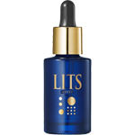

返回列表
产品名称：リッツ シェイプモイスト エッセンス

レバンテ リッツ シェイプモイスト エッセンス ３０ｍｌ
メーカー レバンテ
JANコード 4571263110967
商品の特徴
ひきしめ上手な濃密美容液
- 成分・分量
- 水、ＢＧ、クダモノトケイソウ果実エキス、ザクロ果実エキス、水溶性コラーゲン、加水分解コラーゲン、クリスマムマリチマムカルス培養液、エリンギウムマリチムムカルス培養液、サッカロミセス溶解質エキス、酵母エキス、加水分解ヒアルロン酸、グルコシルヘスペリジン、オタネニンジン根エキス、水添レシチン、水溶性コラーゲンクロスポリマー、金、リシンＨＣｌ、ヒスチジンＨＣｌ、アルギニン、プルラン、タウリン、グルタミン酸、グリシン、ロイシン、セリン、バリン、アスパラギン酸Ｎａ、トレオニン、アラニン、イソロイシン、アラントイン、フェニルアラニン、プロリン、キサンタンガム、アーモンドエキス、エチルヘキシルグリセリン、カルボマー、水酸化Ｋ、（アクリレーツ／アクリル酸アルキル（Ｃ１０－３０））クロスポリマー、ポリクオタニウム－５１、グリセリン、セルロースガム、炭酸水素Ｎａ、チロシン、イノシン酸２Ｎａ、グアニル酸２Ｎａ、フェノキシエタノール
- 用法及び用量
- 洗顔後。化粧水等でお肌を整えたあと、適量を手に取り、お顔を全体にやさしくのばしてなじませてください。
朝晩のお手入れにご使用いただけます。
使用目安
大きめのパール粒大
（スポイトの先２から３的）